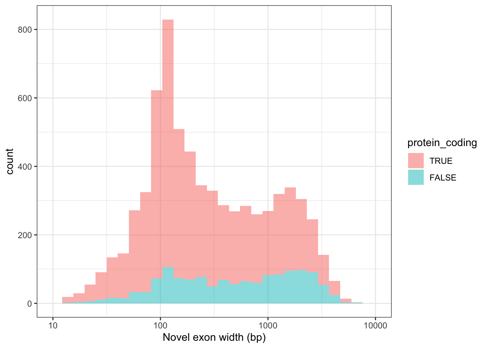

options(stringsAsFactors = F)
options(ucscChromosomeNames = F)
suppressMessages({
library(data.table)
library(tidyverse)
library(rtracklayer)
library(GenomicFeatures)
library(GenomicRanges)
library(plyranges)
# devtools::install_github("mskilab/gUtils")
library(gUtils)
})
colorVector = c(
"Known" = "#009E73",
"ISM" = "#0072B2",
"ISM_Prefix" = "#005996",
"ISM_Suffix" = "#378bcc",
"NIC" = "#D55E00",
"NNC" = "#E69F00",
"Other" = "#000000"
)
colorVector_ismSplit = colorVector[-2]
# Gencode v33 Annotations
gencode="ref/gencode.v33lift37.annotation.gtf.gz"
gr.gencode = rtracklayer::import(gencode)
#txdb.gencode = makeTxDbFromGRanges(gr.gencode)
# Isoseq Annotations
isoseq="data/cp_vz_0.75_min_7_recovery_talon.gtf.gz"
gr.isoseq = rtracklayer::import(isoseq)
#txdb.isoseq = makeTxDbFromGRanges(gr.isoseq)Figure 2 - Novel Exons
Ashok’s code using bash and bedtools
gzcat ref/gencode.v33lift37.annotation.gtf.gz | awk '{if($3=="exon") { for(i=1;i<=NF;i++)if($i~/(exon_id)/){ print $1"\t"$4"\t"$5"\t"$7"\t"$16"\t"$i"\t"$(i+1)}}}' | sed 's/[";]//g' | awk '{print $1"\t"$2"\t"$3"\t"$5"_"$6"_"$7"\t""1000""\t"$4}' | awk '!seen[$0]++' > data/working/novel_exons/All_Gencode_Exon.bed
gzcat data/cp_vz_0.75_min_7_recovery_talon.gtf.gz | awk '{if($3=="exon") { for(i=1;i<=NF;i++)if($i~/(exon_status|talon_exon|gene_name)/){ printf "%s%s",(!c++? "":FS),$i"\t"$(i+ 1) }; print "\t"$1"\t"$4"\t"$5"\t"$7; c=0 }
}' | sed 's/[";]//g' | awk '{if($6=="NOVEL") print $7"\t"$8"\t"$9"\t"$2"_"$3"_"$4"\t""1000""\t"$NF}' | awk '!seen[$0]++' > data/working/novel_exons/All_Novel_Exon.bed
bedtools intersect -a data/working/novel_exons/All_Novel_Exon.bed -b data/working/novel_exons/All_Gencode_Exon.bed -v > data/working/novel_exons/No_genecode_ovelap_novel_exon.bed
sort -k 1,1 -k2,2n data/working/novel_exons/All_Novel_Exon.bed > data/working/novel_exons/All_Novel_Exon_sorted.bed
sort -k 1,1 -k2,2n data/working/novel_exons/All_Gencode_Exon.bed > data/working/novel_exons/All_Gencode_Exon_sorted.bed
bedtools multiinter -header -names Novel Gencode -i data/working/novel_exons/All_Novel_Exon_sorted.bed data/working/novel_exons/All_Gencode_Exon_sorted.bed > data/working/novel_exons/bulk_NewCoding.txt***** WARNING: File data/working/novel_exons/All_Novel_Exon.bed has inconsistent naming convention for record:
GL000204.1 56744 57007 TALONG000062493_talon_exon_1018404 1000 -
***** WARNING: File data/working/novel_exons/All_Novel_Exon.bed has inconsistent naming convention for record:
GL000204.1 56744 57007 TALONG000062493_talon_exon_1018404 1000 -#Mike’s code using R
#How many distinct GENCODE exons?
exons.gencode_unique = gr.gencode %>% as_tibble() %>% filter(type=='exon') %>%
dplyr::select(seqnames, start, end, exon_id)
exons.gencode_unique$seqnames=as.character(exons.gencode_unique$seqnames)
length(unique(exons.gencode_unique$exon_id)) #748355 unique exon IDs in gencode[1] 748355 exons.gencode_unique$coord = paste0(exons.gencode_unique$seqnames, ":", exons.gencode_unique$start, "-", exons.gencode_unique$end)
length(unique(exons.gencode_unique$coord)) #634758 unique chr-start-stop in gencode[1] 634758 exons.gencode = unique(gr.gencode[gr.gencode$type=='exon',])
length(exons.gencode)[1] 634771 ashok.gencode= read.table("data/working/novel_exons/All_Gencode_Exon_sorted.bed")
dim(ashok.gencode) # 750284 in Ashok's bed file[1] 750284 6 # How many distinct IsoSeq exons? ~83k
exons.isoseq_unique = gr.isoseq %>% as_tibble() %>% filter(type=='exon',exon_status=="NOVEL") %>% dplyr::select(seqnames, start, end, exon_id) %>% mutate(coord=paste0(as.character(seqnames), ":", start, "-", end))
length(unique(exons.isoseq_unique$exon_id)) #334861 by exon_ID in Talon[1] 82882 length(unique(exons.isoseq_unique$coord)) #334774 by coordinates[1] 82850 ashok.isoseq = read.table("data/working/novel_exons/All_Novel_Exon.bed")
dim(ashok.isoseq) #83153 in Ashok's bed file[1] 83153 6 exons.isoseq = unique(gr.isoseq[gr.isoseq$type=="exon",])
# Find compltely non-overlapping exons
## Used two methods, both give 7039 unique exons in TALON not overlapping in Gencode -- from 3549 genes
novel <- exons.isoseq %>% filter_by_non_overlaps(exons.gencode, minoverlap = 2L) %>% filter(grepl("chr", seqnames))
length(novel) #7039 novel exons[1] 7039 length(unique(novel$gene_id)) #3551 genes with novel exons[1] 3551 sum(width(novel %>% reduce_ranges())) #3849462 bp --> 3.85MB of novel exons[1] 3849462 novel2 = subsetByOverlaps(exons.isoseq, exons.gencode,invert = T,type='any',ignore.strand=T, minoverlap = 2L)
novel2 = novel2[grepl('chr',seqnames(novel2))]
length(unique(novel2$gene_name))[1] 3549 these_novel = novel2 %>% as_tibble()
write.csv(these_novel, file="data/working/novel_exons/mike_novel.csv")
## Write GTF for novel exons, and control (strand flipped exons)
export(novel2,"data/working/novel_exons/novel_exons_mike.gff",format = "gff")
export(gr.flipstrand(novel2),"data/working/novel_exons/novel_exons_strandflip_mike.gff",format = "gff")
ashok.novel = read.table("data/working/novel_exons/No_genecode_ovelap_novel_exon.bed")
ashok.novel = ashok.novel[grepl("chr",ashok.novel$V1),]
dim(ashok.novel) # Ashok gets 7041 isoforms in 3542 genes[1] 7041 6 ashok.novel.genes = unique(unlist(lapply(strsplit(ashok.novel$V4, "_"),'[',1)))
length(intersect(ashok.novel.genes, novel2$gene_name))[1] 3539 ashok.novel.genes[!ashok.novel.genes %in% novel2$gene_name][1] "SLC35A1" "PPP1R32" "AC007262.2" novel2$gene_name[!novel2$gene_name %in% ashok.novel.genes] [1] "PINK1" "ERI3" "RBM5" "B3GALNT1"
[5] "PDK4" "SMARCD3" "RBM17" "ABLIM1"
[9] "DDB1" "TALONG000089386"these_novel %>% head()# A tibble: 6 × 54
seqnames start end width strand source type score phase gene_id gene_…¹
<fct> <int> <int> <int> <fct> <fct> <fct> <dbl> <int> <chr> <chr>
1 chr1 18913 19139 227 - TALON exon NA NA ENSG0000… WASH7P
2 chr1 18913 20286 1374 - TALON exon NA NA ENSG0000… WASH7P
3 chr1 18913 21119 2207 - TALON exon NA NA ENSG0000… WASH7P
4 chr1 18913 20960 2048 - TALON exon NA NA ENSG0000… WASH7P
5 chr1 18913 19416 504 - TALON exon NA NA ENSG0000… WASH7P
6 chr1 840675 841059 385 + TALON exon NA NA ENSG0000… AL6456…
# … with 43 more variables: gene_status <chr>, gene_type <chr>,
# talon_gene <chr>, havana_gene <chr>, hgnc_id <chr>, level <chr>,
# remap_num_mappings <chr>, remap_status <chr>, remap_target_status <chr>,
# transcript_id <chr>, transcript_status <chr>, transcript_name <chr>,
# talon_transcript <chr>, NNC_transcript <chr>, exon_number <chr>,
# exon_id <chr>, talon_exon <chr>, exon_status <chr>, ont <chr>,
# remap_original_location <chr>, source.1 <chr>, tag <chr>, …these_novel$protein_coding = these_novel$gene_type=="protein_coding"
these_novel$protein_coding[is.na(these_novel$protein_coding)] = F
these_novel$protein_coding = factor(these_novel$protein_coding, levels=c(TRUE,FALSE))
Fig2_exonWidth = ggplot(these_novel, aes(x=width,fill=protein_coding)) + geom_histogram(alpha=.5) + scale_x_log10(limits=c(10,10000)) + theme_bw() +
labs(x="Novel exon width (bp)")
Fig2_exonWidth`stat_bin()` using `bins = 30`. Pick better value with `binwidth`.Warning: Removed 62 rows containing non-finite values (stat_bin).Warning: Removed 4 rows containing missing values (geom_bar).
ggsave(Fig2_exonWidth, file="output/figures/Fig2/Fig2_exonWidth.pdf",width=4,height=3)`stat_bin()` using `bins = 30`. Pick better value with `binwidth`.Warning: Removed 62 rows containing non-finite values (stat_bin).
Removed 4 rows containing missing values (geom_bar).